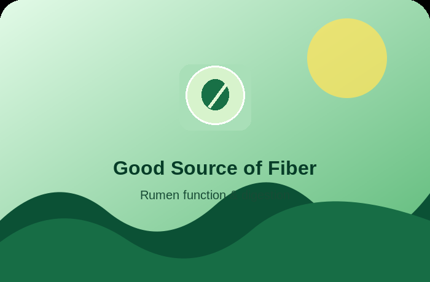
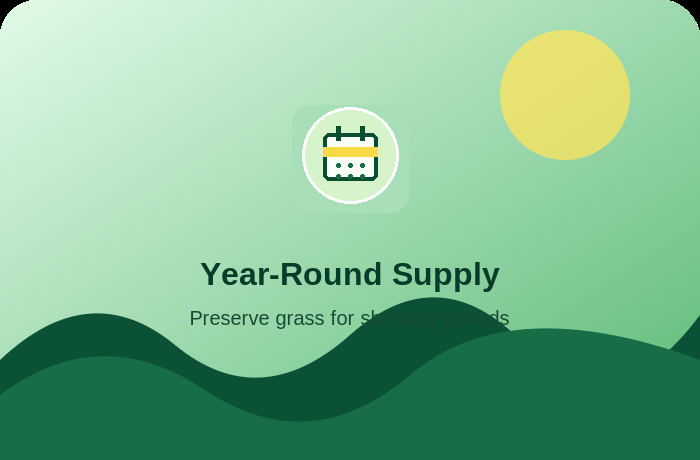
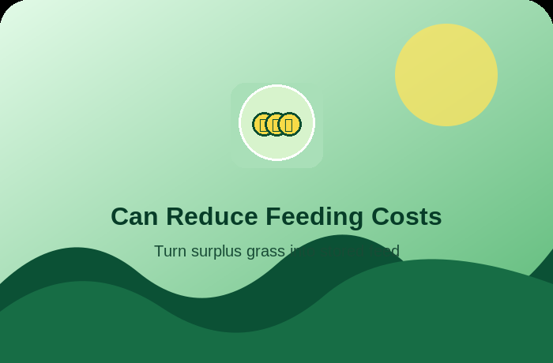
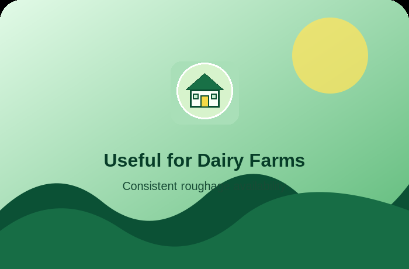

01
Good Source of Fiber
Helps maintain proper rumen function and supports healthy digestion.
Practical advantages of properly prepared and stored grass silage for livestock feeding.

Helps maintain proper rumen function and supports healthy digestion.

You can harvest grass when it is abundant and preserve it for periods of rain, drought, or grass shortage.

Good-quality silage provides energy and fiber needed by dairy cows. When combined with an appropriate protein/mineral concentrate, it can help maintain or improve milk yield.

Proper fermentation preserves much of the feed's nutritional value compared with simply leaving harvested grass to spoil.

Properly packed and sealed silage can be stored for months, reducing dependence on daily fresh grass.

Once prepared, it is relatively easy to portion and feed every day.

If you grow your own grass, silage can turn surplus grass into a stored feed reserve rather than letting it go to waste.

Consistent roughage availability makes it easier to maintain a more consistent feeding program.
A simple promise built around useful feed fundamentals.